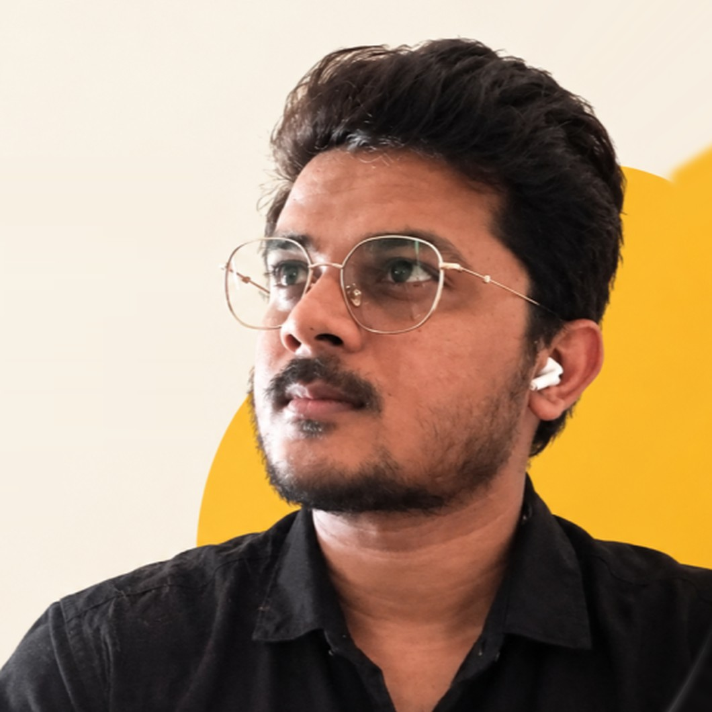

Azhar Shaikh
Co-founder · UX and product design
Azhar moved into UX in 2018 after three years as an engineer at Infosys. He has led projects for Bajaj Auto and Philips: motorcycle cluster interfaces now on the road, emergency-care software tested with paramedics, and a Hindi-first app for street vendors. He also builds AI tools for design teams.